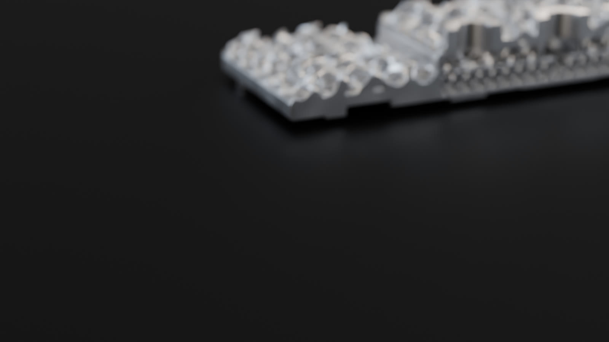

Organ I · replaces the 4090's stock cooler
Full-cover block for the RTX 4090 SUPRIM LIQUID
Coolant drops through a slot nozzle straight onto the die, spreads sideways through a 6.5 mm gyroid core over the GPU and all twelve memory chips, rises around a divider and leaves through a coarser gallery. Solid wings pick up the 26 VRM stages through thermal pads.
- Mass
- –
- Size
- –
- Die, 390 W
- –
- Pressure drop
- –